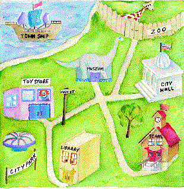

Original cgi version (ca. 1998)
KidsTown was conceived, designed and developed by students at the University of Colorado at Denver through participation in the Senior Design Project course offered by the Department of Computer Science and Engineering. The course represents the capstone experience of the Bachelor of Science in Computer Science and Engineering degree program and involves integrating and applying academic learning through the design and creation of practical products.
KidsTown is a result of the Children's Literacy Project, a joint effort by the Tattered Cover Book Store and the University of Colorado at Denver to provide CU-Denver students with real-world experience in developing a working relationship with a business while designing and create computer-based tools for promoting literacy skills among children. Through this collaboration, the participants address their individual goals in a manner that acknowledges a common responsibility for addressing the needs of other community members.
This page is a static archive of the original 1998 KidsTown CGI project.
The interactive site ran on Perl CGI scripts, which GitHub Pages cannot
execute; browse the original source, including cgi-bin/kt.cgi
and the supporting scripts/ directory, in the
project repository.